1과목: 수처리공정
1. 정수장에서 많이 사용하는 응집제인 폴리염화알루미늄을 황산알루미늄과 비교한 장점으로 옳지 않은 것은?
2. 정수처리 약품의 특성과 관리방법으로 옳은 것은?
3. 플록형성지에 관한 설명으로 옳은 것은?
4. 완속여과지에 관한 설명으로 옳지 않은 것은?
5. 급속여과지에 관한 설명으로 옳은 것은?
6. 병원성 미생물에 대한 대책이 필요할 경우 역세척 배출수의 최종 탁도 목표로 합리적인 것은?
7. 여과지의 수질을 관리하기 위한 설명으로 옳은 것을 모두 고른 것은?
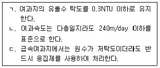
8. 급속여과지의 역세척에 관한 설명으로 옳지 않은 것은?
9. 맛ㆍ냄새 원인물질의 생물학적인 발생원에 관한 설명으로 옳지 않은 것은?
10. 오존처리에 관한 설명으로 옳은 것을 모두 고른 것은?
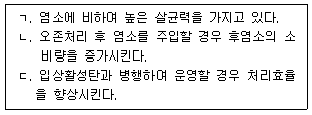
11. 자외선 소독설비에 관한 설명으로 옳지 않은 것은?
12. 소독에 관한 설명으로 옳은 것은?
13. 물과 공기를 충분히 접촉시키는 폭기처리의 효과로 옳지 않은 것은?
14. 소독제로서의 이산화염소에 관한 설명으로 옳은 것은?
15. 함수율 98%인 슬러지 500m3을 탈수하여 만든 함수율 80%의 탈수케이크 부피(m3)는? (단, 슬러지의 비중은 1로 한다.)
16. 배출수 처리시설인 농축조에 관한 설계 고려요소로 옳지 않은 것은?
17. 원수 중에 철이온이 1mg/L, 망간이온이 0.5mg/L 포함되어 있다. 원수 유입량이 100,000m3/day일 때 철이온과 망간이온의 산화처리를 위하여 필요한 최소 염소 소요량(kg/day)은 얼마인가? (단, 철이온과 망간이온은 1mg/L당 염소소요량이 각각 0.63mg/L, 1.29mg/L로 가정한다.)
18. 원수의 수질 특성에 따라 산제나 알칼리제를 주입하여 pH를 조절하는 경우에 관한 설명으로 옳은 것을 모두 고른 것은?
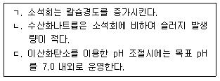
19. 입상활성탄 흡착설비의 설계인자에 관한 설명으로 옳지 않은 것은?
20. 수도용 막여과의 종류 중에서 맛ㆍ냄새물질의 제거가 가능한 가장 경제적인 여과막은?
2과목: 수질분석 및 관리
21. 먹는물수질공정시험기준상 총칙에 관한 설명으로 옳은 것을 모두 고른 것은?
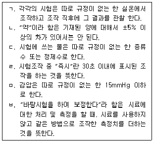
22. 수질오염공정시험기준상 시료보존방법으로 옳지 않은 것은?
23. 먹는물수질공정시험기준상 시안-자외선/가시선 분광법에 의해 시안을 분석할 때 사용하는 시약 중 변하기 쉬우므로 사용 시 제조하는 시약으로 묶인 것은?
24. 먹는물수질공정시험기준에서 총대장균군-시험관법에 관한 설명으로 옳은 것은?
25. 원수 중 화학적산소요구량(COD)을 측정하기 위해 100mL 시료에 산성과망간산칼륨(KMnO4)법에 의한 측정 결과 0.0⑤M-KMnO4가 4.1mL가 소요되었다. 이 시료의 화학적산소요구량(mg/L)은? (단, 바탕시험에 소요된 0.0⑤M-KMnO4는 0.1mL이고, 농도계수는 1.000이다.)
26. 먹는물수질공정시험기준상 암모니아성질소의 측정방법에 해당하지 않는 것은?
27. 먹는물 수질기준 및 검사 등에 관한 규칙상 심미적영향물질에 관한 기준 항목이 아닌 것은?
28. 먹는물관리법령상 먹는물 수질감시항목(정수)을 모두 고른 것은?
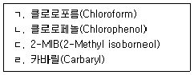
29. 병원성미생물 제거율 및 불활성화비 계산방법상 소독에 의한 불활성화비 계산식으로 옳은 것은?
30. 응집제의 적정 주입량을 결정하기 위한 자-테스트(Jar-Test) 순서로 옳은 것은?
31. 급속교반조나 혼화지 설계 시 필요한 G값(속도경사)을 구할 때 고려인자를 모두 고른 것은? (단, 속도경사식 기준이다.)
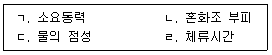
32. 수처리제의 기준과 규격 및 표시기준상 분말활성탄의 성분규격 기준으로 옳지 않은 것은?
33. 막여과시설에서 수도용 막의 분리경으로 잘못 짝지어진 것은?
34. 먹는물관리법에서 정의하고 있는 “먹는물”에 해당하지 않는 것은?
35. 물환경보전법상 용어의 정의로 옳지 않은 것은?
36. 먹는물수질공정시험기준상 페놀류 시험용 시료를 보존하고자 할 때 잔류염소가 함유되어 있는 경우 이를 제거하기 위하여 첨가하는 용액은?
37. 먹는물수질공정시험기준상 분원성대장균군-시험관법에서 확정시험 시 배양온도와 배양시간으로 옳은 것은?
38. 하천법상 국토교통부장관이 지정할 수 있는 국가하천에 해당하지 않는 것은?
39. 수도법상 수도정비기본계획에 포함되지 않는 사항은?
40. 병원성미생물 제거율 및 불활성화비 계산방법상 여과방식에 따른 지아디아 포낭의 제거율이 옳은 것은?
3과목: 설비운영(기계·장치 또는 계측기 등)
41. 횡류식 침전지에 관한 설명으로 옳은 것을 모두 고른 것은?
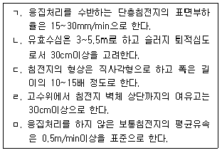
42. 급속여과지의 역세척공정에 관한 설명으로 옳은 것은?
43. 오존처리공정에 관한 설명으로 옳지 않은 것은?
44. 소독 주입설비 및 제해설비에 관한 설명으로 옳지 않은 것은?
45. 탈수기에 관한 설명으로 옳지 않은 것은?
46. 주입오존량 80mg/L, 잔류오존량 20mg/L, 배출오존량 5mg/L일 때 이용률과 전달효율은 약 얼마인가?
47. 약품주입방식에 관한 설명으로 옳지 않은 것은?
48. 6,600V의 전원에서 지상역률 0.8인 300kW 전동기와 지상역률 0.6인 350kW 전동기 2대가 병렬로 운전되는 경우 합성역률은 약 몇 % 인가?
49. 전기설비기술기준에서 전로의 절연성능에 관한 설명이다. ( )에 들어갈 내용으로 옳은 것은?
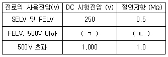
50. 펌프 임펠러의 형상을 나타내는 값으로 사용되는 식에서 적용하지 않는 인자는 무엇인가?
51. 상수도설계기준상 소화전에 관한 내용으로 옳지 않은 것은?
52. 다음 중 용도별 펌프의 정의로 옳지 않은 것은?
53. 고압가스안전관리법령상 고압가스의 범위(기준)로 옳은 것은? (단, 압력은 게이지 압력이다.)
54. 계측제어설비 종류에서 원격 감시제어 장치에 해당하는 것은?
55. 소독제의 주입제어방식에서 캐스케이드제어에 관한 설명으로 옳은 것은?
56. 다음 ( )에 들어갈 용어를 옳게 나열한 것은?
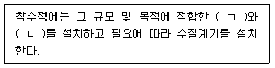
57. 측정의 오차에 관한 내용으로 옳은 것을 모두 고른 것은?
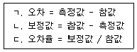
58. 다음의 전달함수에 해당하는 제어방식으로 옳은 것은? (단, X(s)는 입력신호, Y(s)는 출력신호이다.)
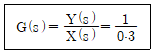
59. 정수시설을 적절하게 운영관리하기 위한 유량측정에 관한 설명으로 옳지 않은 것은?
60. 교류무정전전원설비에서 시스템의 신뢰도 향상을 위한 기능으로 옳지 않은 것은?
4과목: 정수시설 수리학
61. 펌프의 비속도(N S)는 펌프의 형식을 나타내는 지표이다. 비속도 값이 가장 작은 펌프는?
62. 펌프의 비속도(NS) 625, 회전속도 1,000rpm, 양수량 36,000m3/day일 때 전양정(m)은?
63. 플록형성지에 관한 내용으로 옳은 것은?
64. 그림과 같은 수조의 측벽에 직경 20cm의 구멍으로 물을 분출시킬 때, 분출되는 유량(L/sec)은 약 얼마인가? (단, 수조 내 수심은 일정하게 유지된다.)
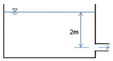
65. 취수장의 수위가 100m, 정수장 수위가 120m일 때, 분당 60m3의 물을 양수하고자 한다. 이 때 펌프의 소요동력(kW)은 약 얼마인가? (단, 펌프의 효율은 75%이고 나머지 손실수두는 무시한다.)
66. 펌프특성(성능)곡선과 운전에 관한 설명으로 옳은 것은?
67. 급속여과지에 관한 설명으로 옳지 않은 것은?
68. 펌프의 공동현상(cavitation) 방지 대책으로 옳지 않은 것은?
69. 직경 300mm, 길이 3km의 관에 유량 500m3/hr이 흐른다. 유속계수가 120일 때 Hazen-Williams공식( hL=10.666×C-1.85×D-4.87×Q1.85×L)을 이용한 관로의 손실수두(m)는 약 얼마인가?
70. 다음 중 무차원이 아닌 것을 모두 고른 것은?
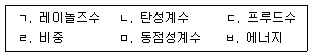
71. 지름 40cm인 관에 3m/sec의 유속으로 물이 흐른다. 이 관로의 100m 구간 손실 수두가 10m일 때 마찰손실계수는 약 얼마인가?
72. 혼화지에 관한 설명으로 옳지 않은 것은?
73. 폭 5m, 수심 4m인 직사각형 단면수로를 통하여 송수하는 경우, 이 흐름이 사류(supercritical flow)가 되기 위한 최소유량(m3/sec)은 약 얼마인가?
74. 정사각형 단면수로에 폭 5m, 높이 5m인 수문이 수직으로 설치되어 있다. 수로의 수위가 4m인 경우 수문에 작용하는 전수압(tonf)은? (단, 물의 단위중량은 1,000kgf/m3 이다.)
75. 베르누이 방정식에 관한 설명으로 옳은 것은?
76. 차압식 유량계가 아닌 것은?
77. 에너지 방정식에서 에너지 보정계수(α)를 나타낸 식은? (단, u는 국부유속이고, V는 단면평균유속이다.)
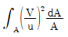
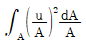
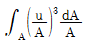
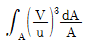
78. 수로의 흐름에 관한 설명으로 옳지 않은 것은?
79. 폭(W), 길이(L), 유효수심(He)이 각각 5m, 16m, 4m인 침전지의 표면부하율이 210m/day일 때, 이 침전지의 유량(m3/hr)은?
80. 관수로 흐름에서 발생하는 손실수두에 관한 설명으로 옳지 않은 것은?